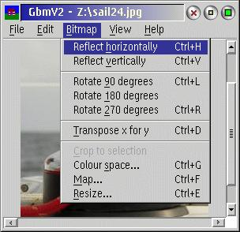
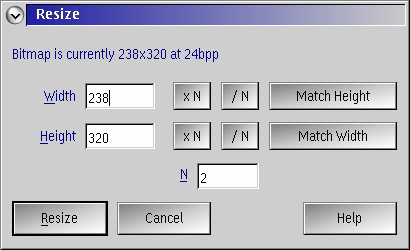
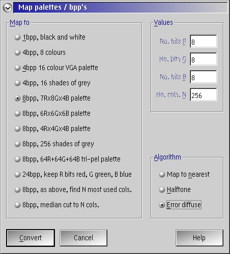
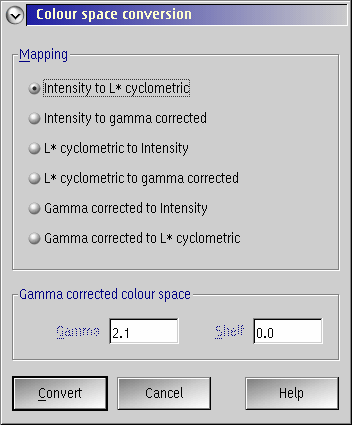

GBMV2 is a bitmap editor for the OS/2 and eComStation Presentation Manager. It can perform any of the functions of the GBM package, which operate on a single bitmap. It directly uses GBM.DLL and thus can show all bitmap file formats supported by it.
It has full online context sensitive help, and an undo option. Interaction with the PM printer and clipboard is possible also. The PM Desktop may also be snapshotted. Also included is export to Metafile capability.
GBMV2 uses the GBMDLG (GBM file dialog) library when the user
is required to provide bitmap filenames.
GBMV2 can use error-diffusion or halftoning to improve the quality
of image display.
Bitmaps will be show in original size only. Zooming in or out is not yet supported.
The whole handling of 1bpp bitmaps in GBMV2 has ever been a bit messy and thus some issues are known which might cause wrong color conversions (clipboard copy/paste, writing to metafile). These are conceptual issues within the tool. The effort to fix all of them would be huge. Thus they will not or only partly be fixed.
If you want reliable results, please convert bitmaps to 24bpp.
usage: gbmv2 ["\"fn.ext\"{,opt}"]
fn.ext{,opt} input filename (with any format specific options)
Bitmap when ext in [BMP VGA BGA RLE DIB RL4 RL8]
GIF when ext in [GIF]
PCX when ext in [PCX PCC]
TIFF when ext in [TIF TIFF]
Targa when ext in [TGA VST AFI]
ILBM when ext in [IFF LBM]
YUV12C when ext in [VID]
Bit-map when ext in [PBM]
Greymap when ext in [PGM]
Pixmap when ext in [PPM]
Anymap when ext in [PNM]
KIPS when ext in [KPS]
IAX when ext in [IAX]
XBitmap when ext in [XBM]
Sprite when ext in [SPR SPRITE]
PSEG when ext in [PSE PSEG PSEG38PP PSEG3820]
GemRas when ext in [IMG XIMG]
Portrait when ext in [CVP]
PNG when ext in [PNG]
JPEG when ext in [JPG JPEG JPE]
opt bitmap format specific option to pass to bitmap reader
In case the filename contains a comma or spaces and options need to be added, the syntax "\"fn.ext\"{,opt}" must be used to clearly separate the filename from the options.
| Main window: |  |
| File dialog box: | |
| Resize dialog: |  |
| Colour mapping dialog: |  |
| Colour space conversion dialog: |  |